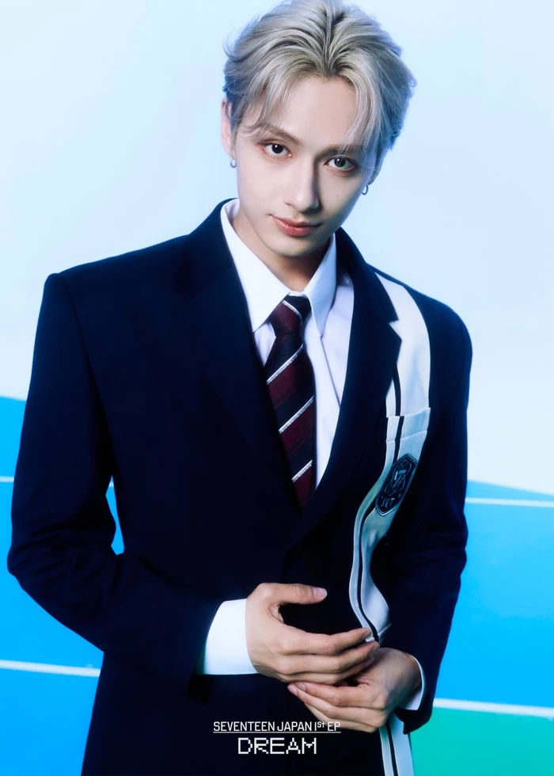

S.Coups (에스쿱스) or Choi Seungcheol (최승철) is the general leader of the group. He is also the leader of the Hip-Hop sub-unit which is composed of the rappers of the group.
Jeonghan (정한) or Yoon Jeonghan (윤정한) is the second eldest member of the group, after S.Coups. He is a member of the Vocal sub-unit and is the lead vocalist and visual of the group.
Joshua (조슈아) or Hong Jisoo (홍지수) is the third eldest member of the group. He is one of the "foreign" members, having grown up in Los Angeles but he is a full Korean member. He is also one of the lead vocalist and visuals of the group.

Jun (준) or Wen Junhui (文俊辉) or Moon Junhwi (문준휘) is another "foreign" member of the group since he is from China. He is the one of the four members that is part of the Performance sub-unit and he is the lead dancer of the group
Hoshi (호시) or Kwon Soonyoung (권순영) is the leader of the Performance sub-unit. He is the main dancer of the group. Hoshi is also one out of the three members who is part of the official sub-unit BooSeokSoon or BSS

Wonwoo (원우) or Jeon Wonwoo (전원우) is a one of the rappers from the Hip-Hop unit. He is also considered as a sub-vocalist in the group with his low yet soothing voice.
Woozi (우지) or Lee Jihoon (이지훈) is the leader of the Vocal sub-unit of Seventeen. He is one of the lead vocalists of the group. Woozi is also one of the major contributors to the creation of their songs as he is the always credited as either the composer or the producer of majority of the group's discography.
DK/Dokyeom (도겸) or Lee Seokmin (이석민) is the main vocalist of the group. He is the second member to be part of the sub-unit BooSeokSoon and is the leader of the trio. DK was also a part of the musical XCalibur, playing the lead role of King Arthur.
Mingyu (민규) or Kim Mingyu (김민규) is one of the members from the Hip-Hop sub-unit. He is also a famous model and endorsers for brands like Chanel, Prada, and more.

The8 (디에잇) or Xu Minghao (徐明浩) or Seo Myungho (서명호) is the second member from China. He is the third member that is part of the Performance sub-unit and has a unique b-boy dance style.
Seungkwan (승관) or Boo Seungkwan (부승관) is the third and last member to be part of the sub-unit BooSeokSoon. Seungkwan is also a main vocalist in the Vocal sub-unit. He is well known to appear in multiple variety shows outside of Going Seventeen with his bright personality.
Vernon (버논) or Choi Hansol (최한솔) is the last member that is not fully Korean since he grew up in New York. He is a rapper from the Hip-Hop unit and has started producing songs as well
Dino (디노) or Lee Chan (이찬) is the youngest of the 13 members. He is the main dancer of Seventeen and is part of the Performance sub-unit.